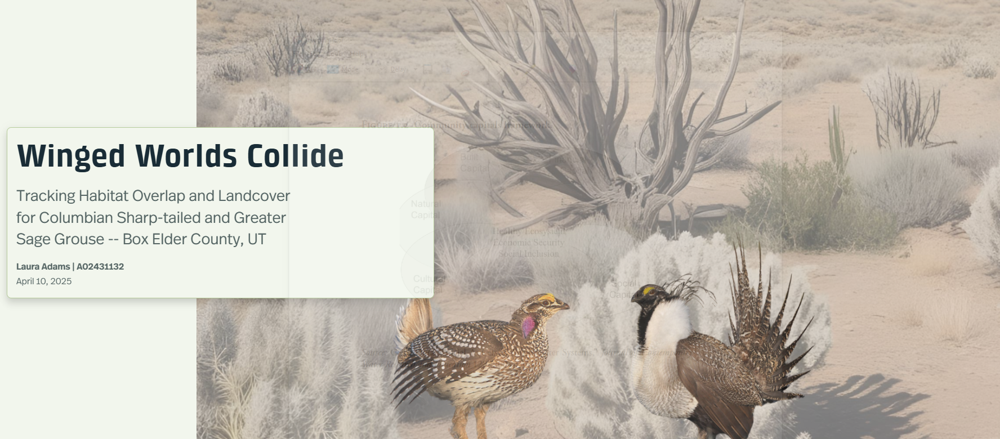
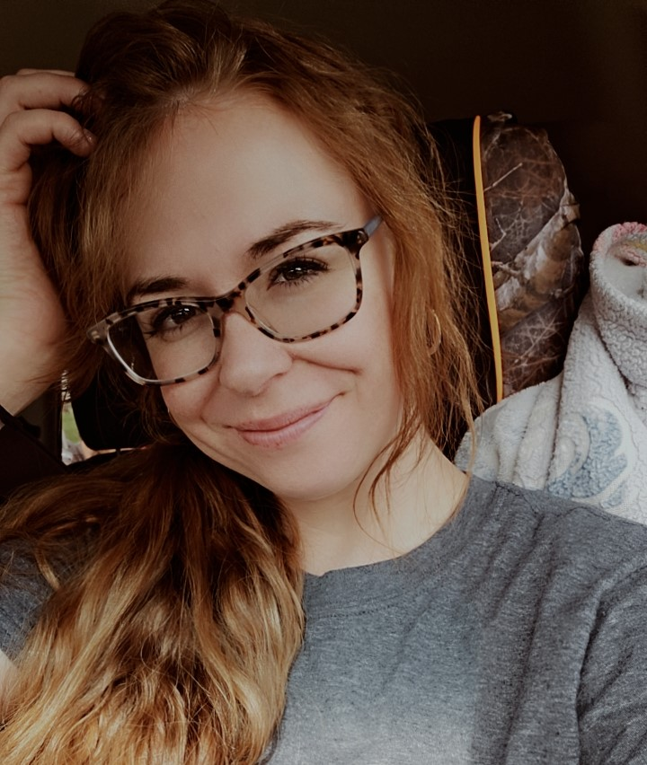

01GIS portfolio / 2023—2026
Making sense
of where we are.
I’m an Environmental Studies and geospatial student from Utah State University interested in the stories hidden inside landscapes, neighborhoods, and movement.
Explore the field notes
01 / The approach
Every map is a conversation between data, design, and place. Every design choice shapes the message.
My work sits at the intersection of data, design, and place. I use GIS to turn complex spatial datasets into clear tools for decisions, and thoughtful maps that invite people to look closer.

I’m passionate about the places that connect us to the natural world, from wildlife and wild landscapes to the communities that depend on them. As an Environmental Studies student with a focus on GIS and geospatial analysis, I’m interested in using maps and data to better understand environmental change, sustainability, and our relationship with the places we call home.
02 / Selected work
Recent field notes
03 / The toolkit
Curious about systems, attentive to detail.
ArcGIS Pro / OnlineAnalysis + publishing
Tableau & R StudioData Visualization and Analysis
PythonAutomation & Workflow
Visual Studio Code & GitHub & Git BashAutomation & Workflow
04 / Say hello